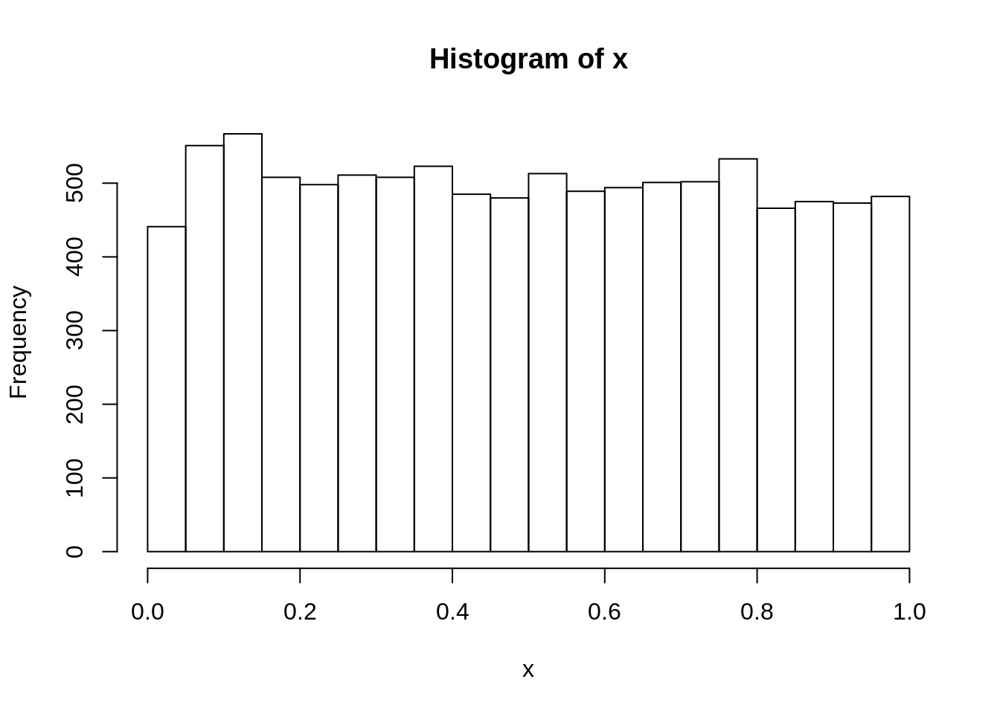
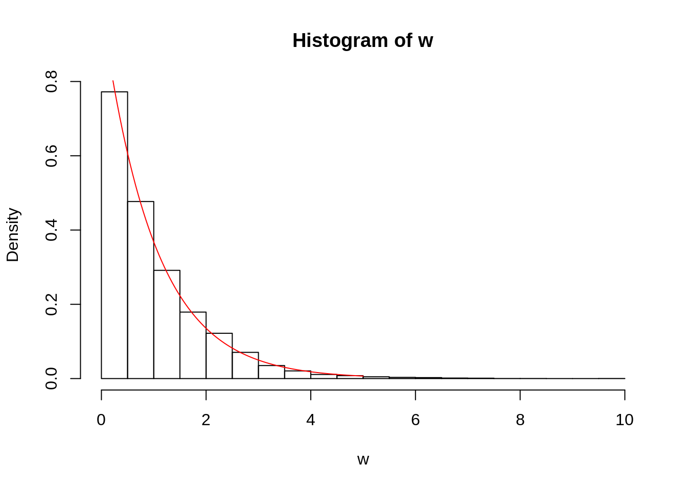
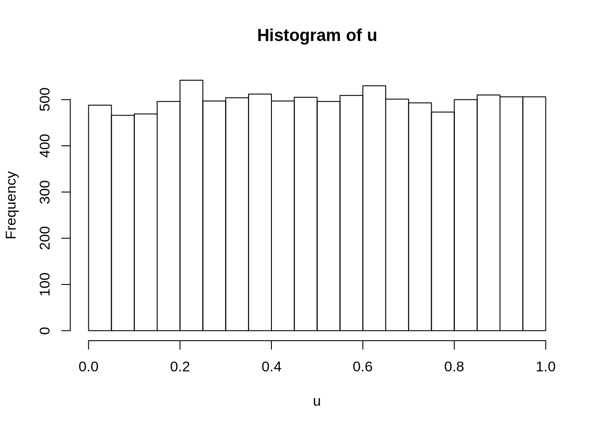
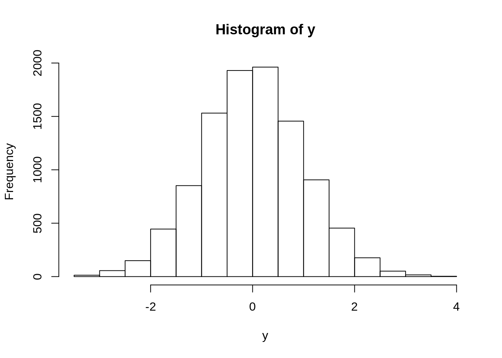
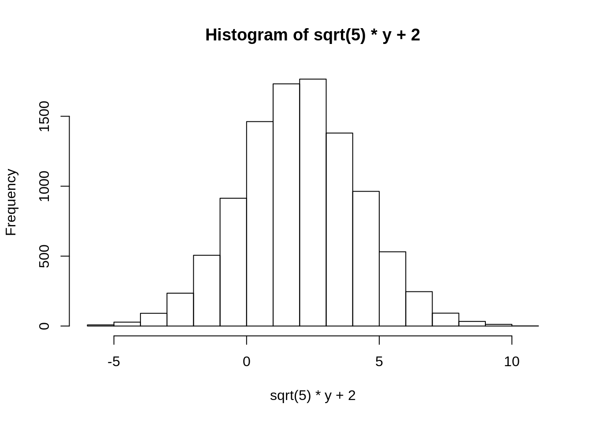
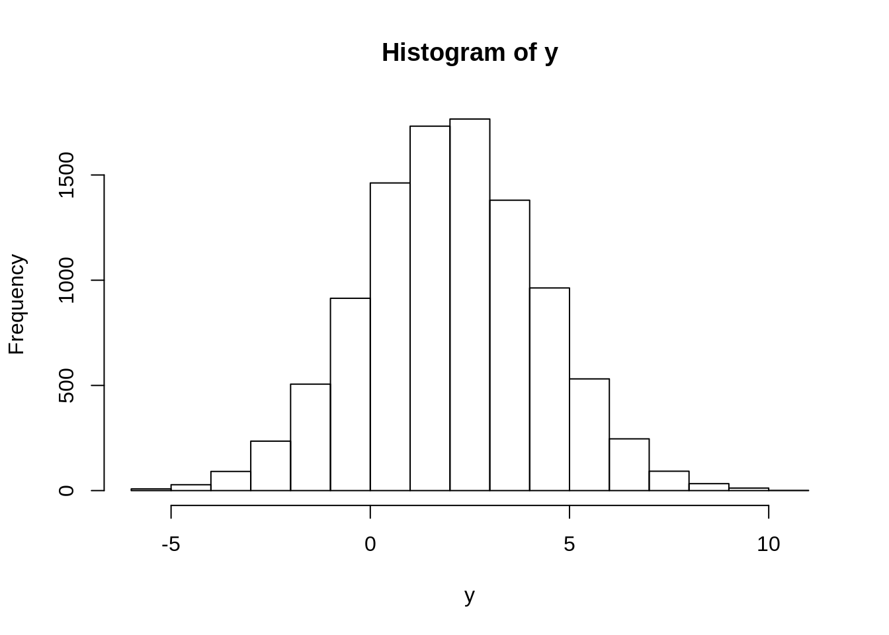
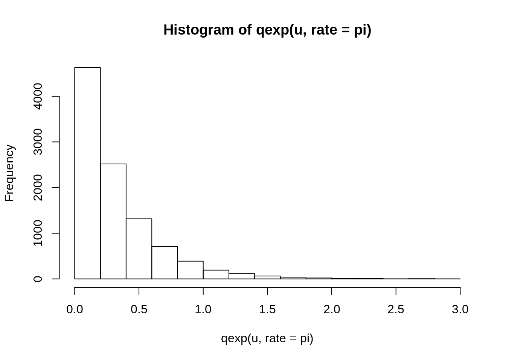
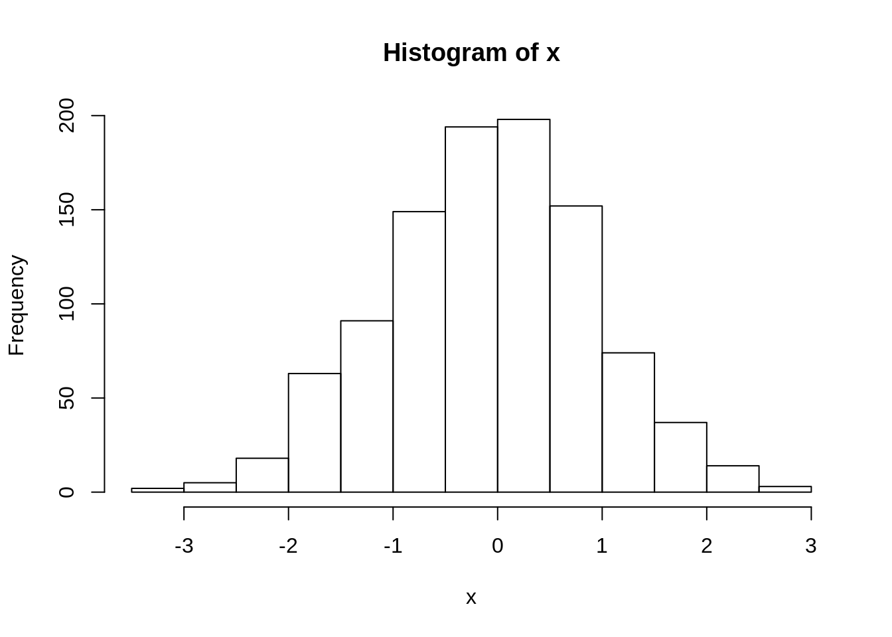
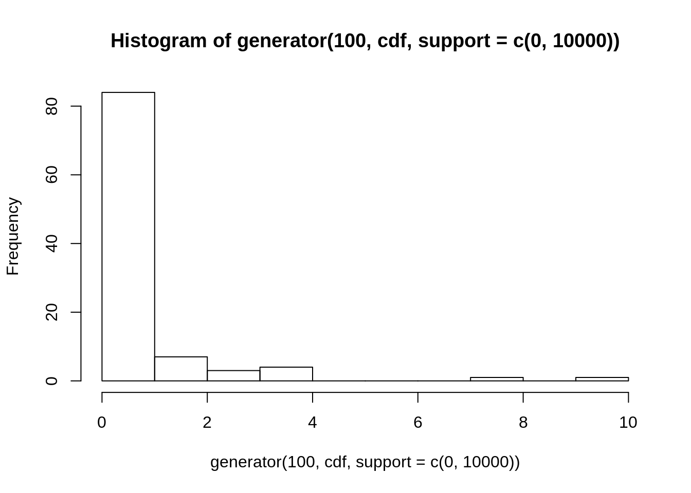

2 Generisanje slucajnih velicina
2.1 Primeri sa teorije verovatnoca
Pokazacemo kako se mogu generisati uzorci iz raspodela koje smo radili na Teoriji verovatnoca.
2.1.1 Prvi zadatak
\(X\sim \mathcal{U}(0,1)\). Odrediti raspodelu:
- \(Y = aX+b\)
- \(W = -\log X\)
2.1.1.1 Raspodela \(Y = aX+b\)
Od ranije (sa TV-a), znamo da treba da bude \(Y\sim\mathcal{U}(b, a+b)\).
# runif sluzi za generisanje slucajnih brojeva iz uniformne (0,1) raspodele
x <- runif(1e4)
# nacrtamo histogram
hist(x)
 Histogrami za
Histogrami za x i y izgledaju slicno, kao uniformna raspodela (svi stupci su iste visine), ali nosac za y je od 7 do 10, sto je bas sto smo ocekivali.
2.1.1.2 Raspodela \(W=-\log X\)
Treba da bude \(W\sim\mathcal{E}(1)\).

# transformisemo x u w logaritmom
w <- -log(x)
# crtamo histogram, probability argument obezbedjuje da na y osi budu
# frekvencije umesto broj pojavljivanja.
# Slika je ista, ali y osa je sad na (0,1)
hist(w, probability = TRUE)
# crtamo funkciju dexp - gustinu eksponencijalne raspodele
# funkcija curve crta datu krivu
# curve uvek prima izraz po x
# xlim odredjujegranice x ose na grafiku
# add = TRUE znaci da se doda na prethodni grafik
curve(dexp(x), xlim = c(0, 5), add = TRUE, col = "red") Vidimo da se dobro poklapaju histogram i teoretska gustina eksponencijalne raspodele.
2.1.2 Drugi zadatak
\(X \sim \mathcal{E}(\lambda)\). Odrediti raspodele:
- \(Y = [X]\)
- \(W = 1-e^{-\lambda X}\)
2.1.2.1 Raspodela \(Y\)
Treba da bude \(Y \sim\mathcal{G}(1-e^{-\lambda})\)
# sa rexp generisemo uzorak iz eksponencijalne raspodele
x <- rexp(1e4, rate = 0.1) #lambda = 0.1
hist(x, prob = TRUE)
y <- floor(x) # ceo deo je floor funkcija
# crtamo histogram y
hist(y, prob = TRUE)
# sad cemo da nacrtamo preko histograma odgovarajuce vrednosti sa zakona
# raspodele geometrijske raspodele, posto nemamo gustinu
# uzecemo tacke od 1 do 50, jer geometrijska raspodela uzima vrednosti 1,2,...
# (ogranicili smo se na 50 bez posebnog razloga, dovoljno je veliki broj)
pts <- seq_len(50)
# i nacrtacemo vrednost zakona raspodele, koji se dobija funkcijom dgeom,
# koristecu funkciju points, koja na postojeci grafik dodaje tacke.
points(dgeom(pts, prob = 1-exp(-0.1)), col = "red")2.2 Metoda inverzne transformacije
2.2.1 Uvodni primeri
Na Teoriji verovatnoca samo pokazali da ako je \(X\) slucajna velicina sa funkcijom raspodele \(F_X\), onda \(Y=F_X(X)\) ima uniformnu raspodelu na \([0,1]\)
Slicno, ako je \(U\sim \mathcal{U}[0,1]\), onda \(T=F_X^{-1}(U)\) ima istu raspodelu kao \(X\).
Pogledajmo neke primere

Kada na u primenimo qnorm (inverz funkcije raspodele normalne raspodele), treba da dobijemo normalnu raspodelu.

Ako zelimo da dobijemo normalnu raspodelu \(\mathcal{N}(2, 5)\), to mozemo uraditi na vise nacina. Jedan je da transformisemo standardnu normalnu raspodelu linearnom transformacijom \(\sigma X + m\), a drugi da prosto damo argumente mean i sd funkciji qnorm.


Ako hocemo uzorak iz eksponencijalne raspodele, samo na u primenimo qexp sto predstavlja inver funkcije raspodele eksponencijalne raspodele.

2.2.2 Opsti generator
Napravicemo sada opsti generator slucajnih brojeva iz apsolutno neprekidnih raspodela, trazenjem inverza funkcije raspodele numerickim metodama. Ovaj generator cemo moci da koristimo za generisanje uzoraka iz proizvoljne apsolutno neprekidne raspodele.
Numericko trazenje inverza se zasniva na sledecem:
Ako je \(x = F^{-1}(t)\), to znaci da je \(t = F(x)\), tj. \(x\) je resenje jednacine \(F(x) - t = 0\), tj. \(x\) je nula funkcije \(g(x) = F(x) - t\).
Dakle, da bismo nasli numericki inverz neke funkcije \(F\), potrebno je da nadjemo nulu funkcije \(g(x) = F(x) - t\).
Napravicemo prvo funkciju koja za datu funkciju i tacku \(t\) vraca inverz te funkcije u toj tacki.
# Funkcija koja vraca inverz funkcije f u tacki t.
# Domen funkcije f je argument support.
# Primer:
# f <- pexp
# inv(f, 0.3, c(0, 100000))
inv <- function(f, t, support) {
uniroot(function(x) f(x) - t,
interval = support)$root
}Testirajmo vrednost koju vraca. inv(pexp...)(pexp je funkcija raspodele) treba da se poklopi sa qexp.
## [1] 0.3566753## [1] 0.3566749Napravimo sada fuknciju koja ce da se koristi kao generator.
# Kao argument funkcije primamo obim uzorka koji generisemo,
# funkciju raspodele trazene raspodele i nosac raspodele.
generator <- function(n, cdf, support) {
# inicijalizujemo uzorak kao prazan vektor od n elemenata
sample <- numeric(n)
# generisemo n brojeva iz uniformne raspodele
u <- runif(n)
# za svaki od brojeva u_i primenimo inverz funkcije raspodele
for (i in 1:n) {
sample[i] <- inv(cdf, u[i], support)
}
# vracamo uzorak
return(sample)
}Testirajmo da li generator pravi dobar uzorak, na primeru normalne raspodele:

2.2.2.1 Zadatak.
Generisati uzorak obima 100 iz raspodele sa funkcijom raspodele \(F(x) = \begin{cases} 0,& u < 0 \\ 1 - e^{-\lambda\sqrt{u}},& u \geq0 \end{cases}\)
lambda <- 2
cdf <- function(x) 1 - exp(-lambda*sqrt(x))
hist(generator(100, cdf, support = c(0, 10000)))